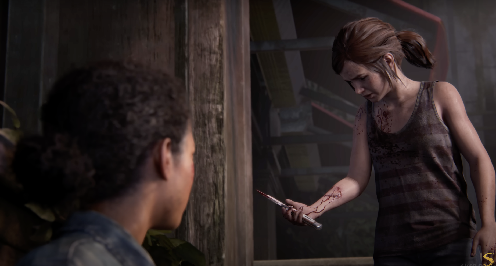
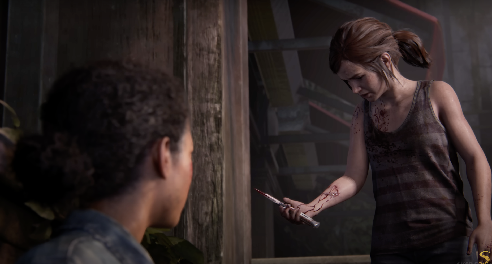

"The Last of Us" é uma jornada emocional e intensa que segue Joel, um homem marcado pela perda, e Ellie, uma adolescente corajosa, em um mundo pós-apocalíptico devastado por uma infecção que transformou grande parte da população em criaturas hostis. Aqui está um resumo dos principais acontecimentos do jogo:
Prólogo: O jogo começa mostrando a vida de Joel antes do surto, incluindo a morte de sua filha, Sarah, durante os primeiros estágios da infecção.

20 anos depois: Joel agora vive em uma zona de quarentena militar em Boston, onde ele trabalha como contrabandista, fazendo entregas de mercadorias ilegais.
Viagem: Joel relutantemente concorda em levar Ellie para encontrar os Fireflies. Ao longo da jornada, eles enfrentam diversos perigos, incluindo infectados, sobreviventes hostis e forças militares.

Desenvolvimento de Laços: Durante a jornada, Joel e Ellie desenvolvem um vínculo forte e afetuoso, com Ellie se tornando uma figura de substituição para a filha que Joel perdeu.

Revelações: Joel descobre que os Fireflies planejam usar Ellie para desenvolver uma cura, o que exigiria sacrificar sua vida. Ele se recusa a deixar Ellie ser sacrificada.

Fuga: Joel resgata Ellie dos Fireflies e eles escapam juntos, enfrentando uma batalha feroz contra os militares e os Fireflies no processo.

Final: O jogo termina com Joel mentindo para Ellie sobre o que aconteceu, dizendo a ela que os Fireflies já haviam encontrado muitos outros imunes e que nenhum deles era uma cura. Ellie parece desconfiada, mas aceita a história de Joel.

"Left Behind" é uma expansão autônoma para "The Last of Us", lançada como conteúdo para download adicional. O jogo expande a narrativa principal, focando em eventos anteriores e posteriores ao enredo principal.
Antes do Jogo Principal: "Left Behind" se passa em duas linhas do tempo diferentes. Uma delas ocorre antes dos eventos de "The Last of Us" e a outra ocorre durante uma lacuna na narrativa principal.
História Anterior: Nessa parte, a narrativa se concentra em Ellie antes de conhecer Joel. Ela está em uma zona de quarentena militar em Boston e faz amizade com uma garota chamada Riley, que é sua melhor amiga. Juntas, elas exploram um shopping abandonado, relembram memórias do passado e confrontam os perigos do mundo pós-apocalíptico.

Lacuna na História Principal: Na segunda linha do tempo, o jogo se passa durante um momento em que Joel está ferido e inconsciente. Ellie se vê sozinha em uma loja de departamentos abandonada, lutando para encontrar suprimentos médicos para salvar Joel. Durante esse período, ela lida com os desafios do ambiente hostil e reflete sobre suas emoções e conexões com Joel.


 

Left Behind é uma adição fantástica ao universo de "The Last of Us". Ela não apenas expande a história, mas também oferece insights emocionantes sobre os personagens e o mundo pós-apocalíptico em que vivem. A narrativa é bem construída, explorando temas como amizade, sobrevivência e sacrifício de uma maneira envolvente. Além disso, o jogo mantém a alta qualidade visual e mecânica que é característica da Naughty Dog, proporcionando uma experiência imersiva e emocionante. Os momentos de jogabilidade são complementados por sequências cinematográficas que ajudam a contar a história de forma eficaz. No geral, "Left Behind" é uma parte essencial da experiência de "The Last of Us" e uma expansão que os fãs do jogo certamente apreciarão.